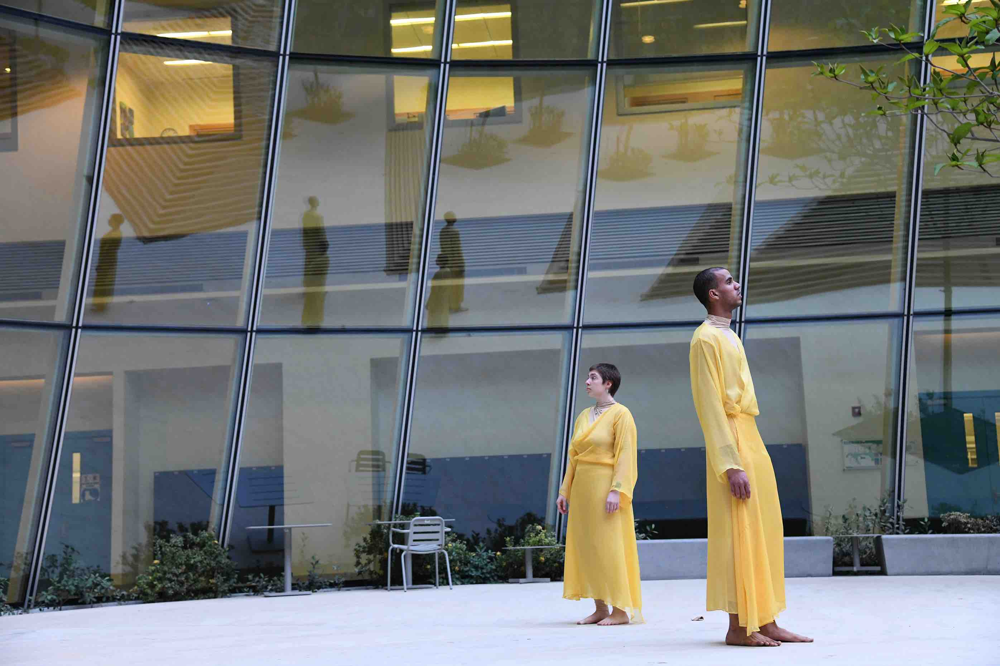
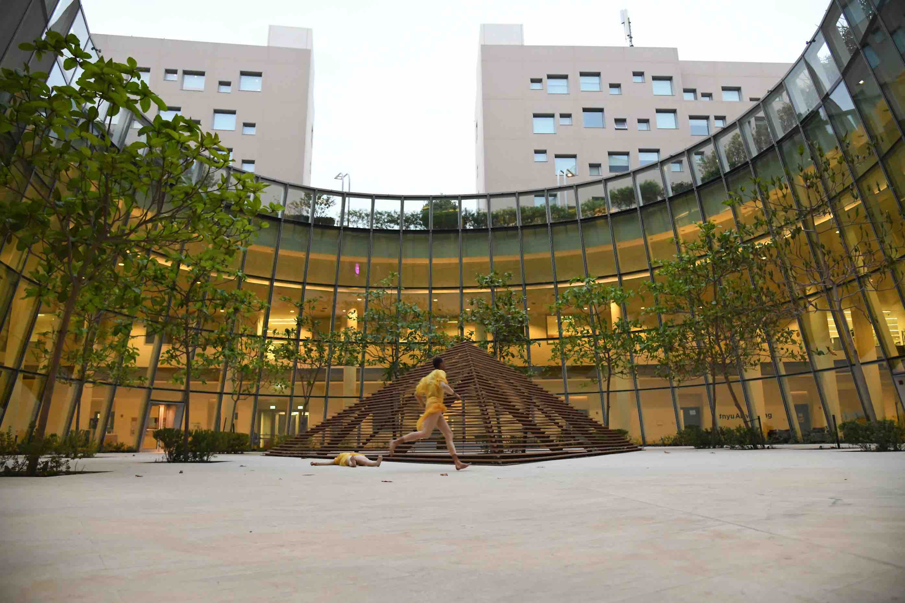

MARIKA NIKO


Choreographic Research
nudation
2022 Olfactory Ritual Performance
Starting from a bare state, this ritual performance invited visitors to conjure their memories and map them on the site, Orchard Park. Using scent as a guide, the performance inspired a moment of solitude and intimacy with the park’s natural habitat, bridging the visitors’ past with the nature’s present. Contemplating on the different temporalities that lingered in the park – their embodied memories and the saplings’ future – the performance offered a humble celebration to the newly planted cherry blossom trees.
Performed by Zhixuan (Miki) Zhu
Music by Poah West
Choreographed by Marika Niko
Supported by Duke Forum for Scholars and Public
Performed by Zhixuan (Miki) Zhu
Music by Poah West
Choreographed by Marika Niko
Supported by Duke Forum for Scholars and Public


Photo by Alec Himwich
Caress
2021 Immersive Audio Choreography
Caress is a 28-minute immersive audio choreography that explores the gendered and racialized labor of providing and accepting care. As Caress moves between story fragments, meditative and erotic narration, and domestic choreography, we ponder together the ways in which care expresses itself in our most intimate moments with lovers, family, friends, and nature.
Written and Choreographed by Nia Wilson and Marika Niko
Sound by Keira Simmons
Voice by Marika Niko, Yukari Niko, Mars Dixon, Keimei Jin, Tomo, Lee Edwards, and Nia Wilson (in order of appearance)
Special Thanks to Dr. Angenette Spalink and Dr. James R. Ball III
Supported by Academy of Visual and Performing Arts’s Pandemic Innovative Arts Grant at Texas A&M University
Written and Choreographed by Nia Wilson and Marika Niko
Sound by Keira Simmons
Voice by Marika Niko, Yukari Niko, Mars Dixon, Keimei Jin, Tomo, Lee Edwards, and Nia Wilson (in order of appearance)
Special Thanks to Dr. Angenette Spalink and Dr. James R. Ball III
Supported by Academy of Visual and Performing Arts’s Pandemic Innovative Arts Grant at Texas A&M University
memory is a partial victory over death
2019 Site-Specific Dance Performance
Placing Henri Bergson’s philosophical framework as the foundation, this research questioned how aging bodies, specifically of my grandmother with dementia, remember childhood memories from World War II. memory is a partial victory over death was a site-specific performance that pondered upon the relationship between materiality and memory, historical trauma and amnesia, and dementia and aging. The duet challenges the presence of time and the body reflected and refracted back to them in the Atrium space.
Performed by Ophelia Senfter and Simon Wilkes
Stage Managed by Sarah Booth
Choreographed and Designed by Marika Niko
Supported by Capstone Research Grant, New York University Abu Dhabi Theater Program
Performed by Ophelia Senfter and Simon Wilkes
Stage Managed by Sarah Booth
Choreographed and Designed by Marika Niko
Supported by Capstone Research Grant, New York University Abu Dhabi Theater Program


Courtesy of The NYUAD Theater Program, Photo by Harshini Karunaratne